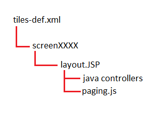

Web apps are applications like Roofing/Gutter, Siding, and the lessly touched KItchen Virtual Design-It. They are made up of Java, JSP, HTML, and CSS. In addition, they are hosted on a web server like JBoss or TomCat. Recently as of 2015 OCT, we no longer run JBoss servers and have moved to TomCat servers.
Currently, Siding and Roofing uses the strut and tiles design pattern. Highly reocommend to understand this design pattern to make navigating the app easier.
You can debug a java classes just like Deck and Landscaping. There is just a slight difference with web apps, intial setups are:
Note that in order to debug initialized classes in roofing or siding, you have to quickly start the debug right after you start the server. or the classes will have already been init thus, you'll never hit those initialized classes.
Basically you can't debug how you do with java files using break points nor can you run JSP in eclipse. You have to run the app on the browser, and modify the JSP to print out values that you need to the browser console.
Once you have deployed your war files to the jboss server, modify the local jsp files in there. Start and stop the server to see your jsp changes. Once you are satisfy and confirmed that the jsp changes are working correctly, you can then transfer those local jsp changes on the jboss/tcserver side to your development side.
Use a jsp file to call the js method. For example, a button image is called within a button.jsp or screen.jsp file. The jsp file can load, create, and call js files. Hence, inside the JSP we can call the js methods, or call it through a VM wrapper. look at the utils.js and exit.jsp for examples.